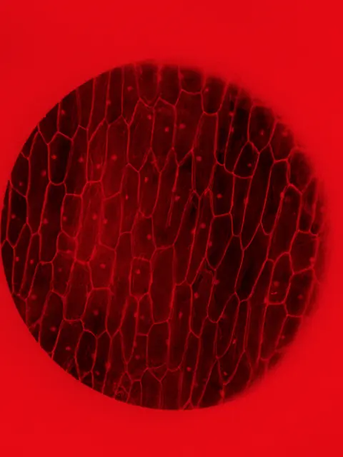
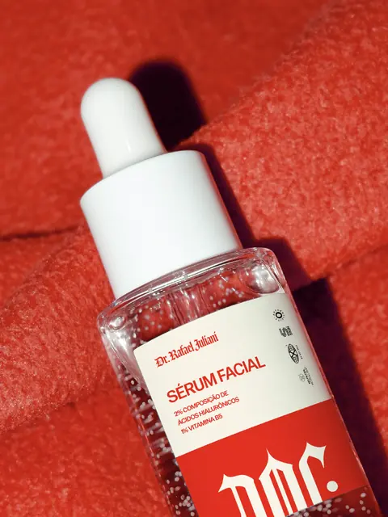
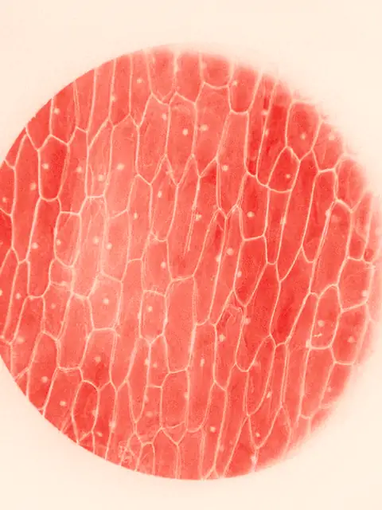

Toxina botulínica
Congelar a cara? Não aqui. A expressão é sua.
No filter. No bullshit.
Aqui a estética parte de quem você é — nunca de um padrão. Ciência e arte a favor da sua identidade.
Filosofia
A indústria prefere silêncio: maquia, uniformiza, clareia, abafa — e vende isso como liberdade. A gente discorda. Estética não existe pra te encaixar num padrão.
Ciência pra precisão, arte pro olhar. Juntas, leem o que é seu — proporção, expressão, história — e partem daí. O procedimento é meio; a identidade é o ponto de partida.
“Autocuidado não é ceder. É escolher.”
Diferenciais
Individualização de verdade: leitura única pra cada rosto, não protocolo de prateleira.
Visão artística sobre proporção, expressão e história. Estética é linguagem.
Estética natural: resultado que parece você num bom dia — nunca um rosto carimbado.

Experiências
Cada procedimento é pensado como experiência estética — não como item de menu clínico.
Congelar a cara? Não aqui. A expressão é sua.

Volume e contorno com leitura individual — nada de molde universal.

Pele nova na superfície. Renovação sem drama.

Estímulo de dentro pra fora. Textura que responde.
Firmeza e definição, com tecnologia que vai fundo.
Lifestyle
Pertencimento, atitude e identidade. Cuidar da pele é escolher — nunca obedecer.
Autoridade
Formação séria, mão autoral e uma convicção: estética é identidade, não padrão. Cada rosto é tratado como caso único — técnica de sobra, zero fórmula pronta. Autoridade que não precisa gritar.
Prova real
Sem filtro
Onde atende
Perguntas
Vamos nessa
Nada de pacote empurrado: uma conversa real sobre você, no seu tempo. Manda mensagem no WhatsApp — sem pressa, sem pressão.